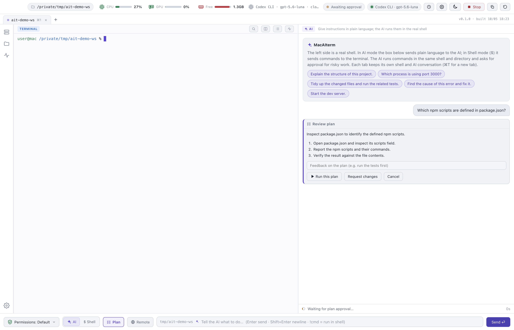
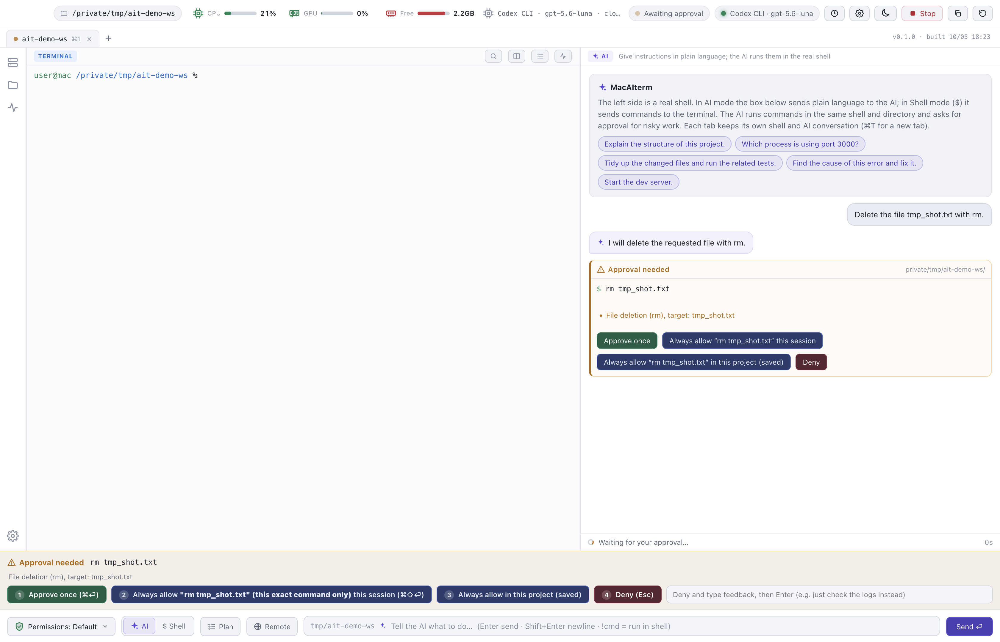
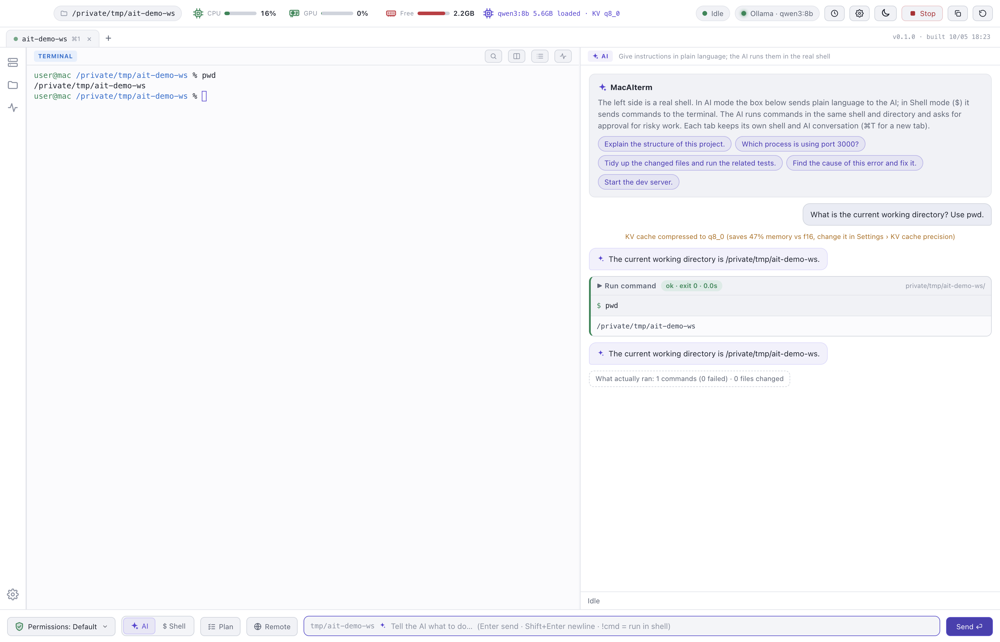
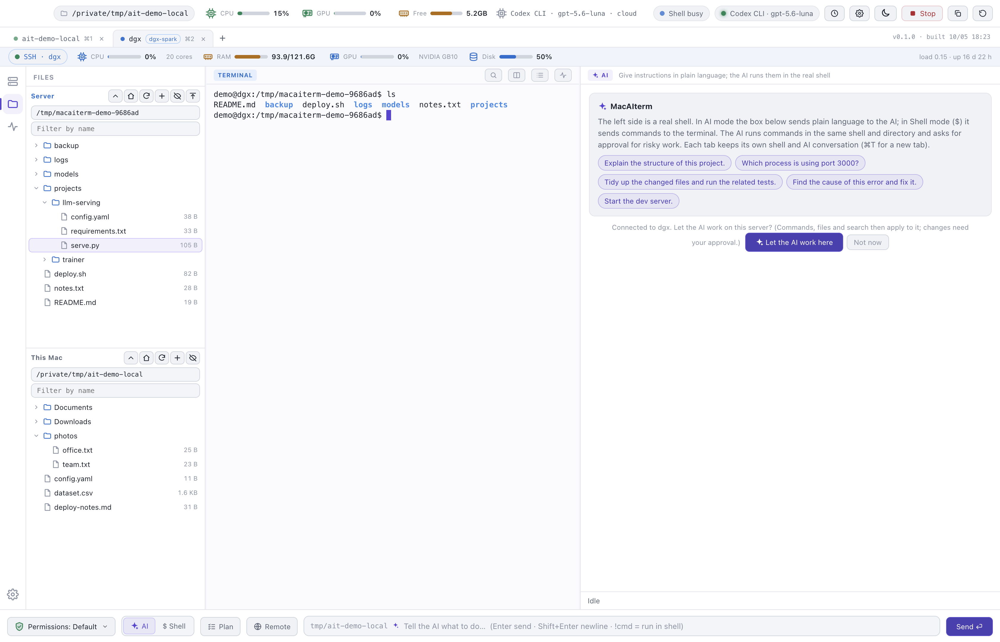
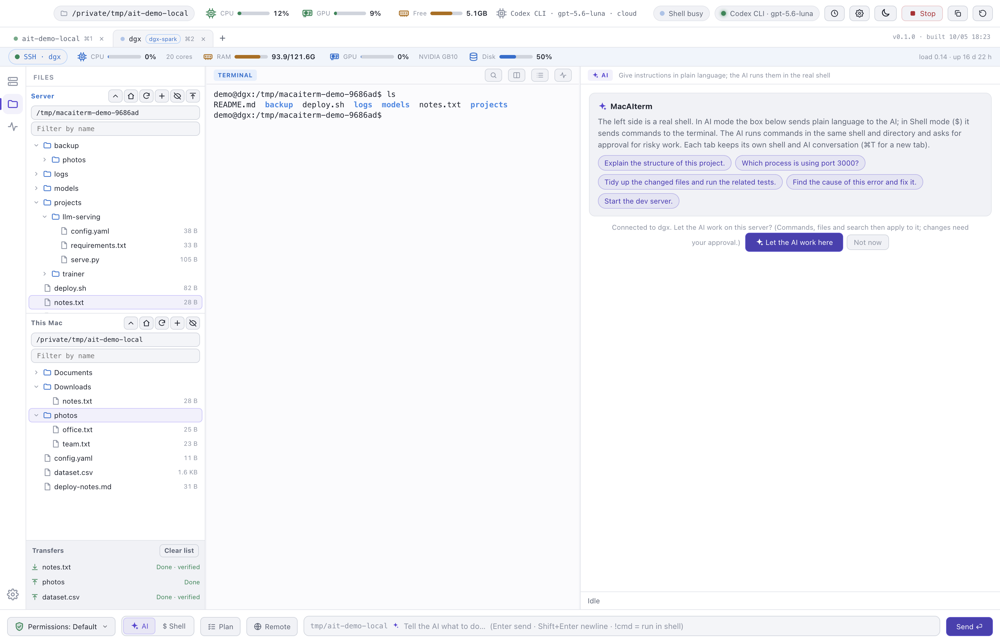
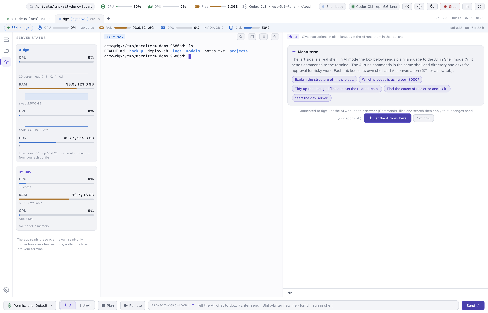
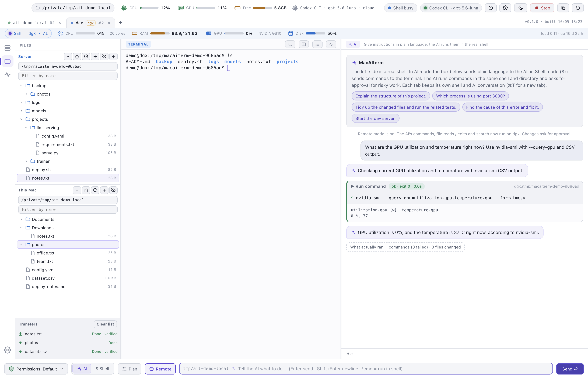
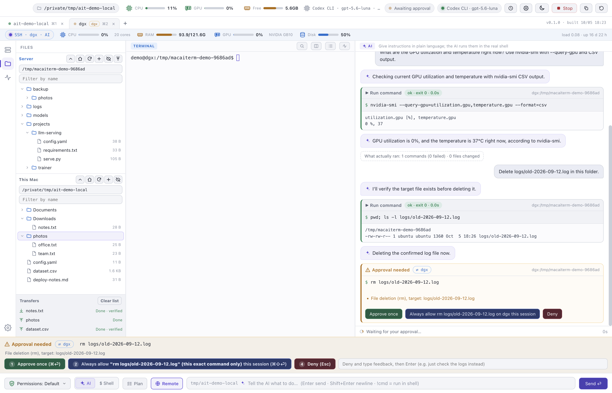
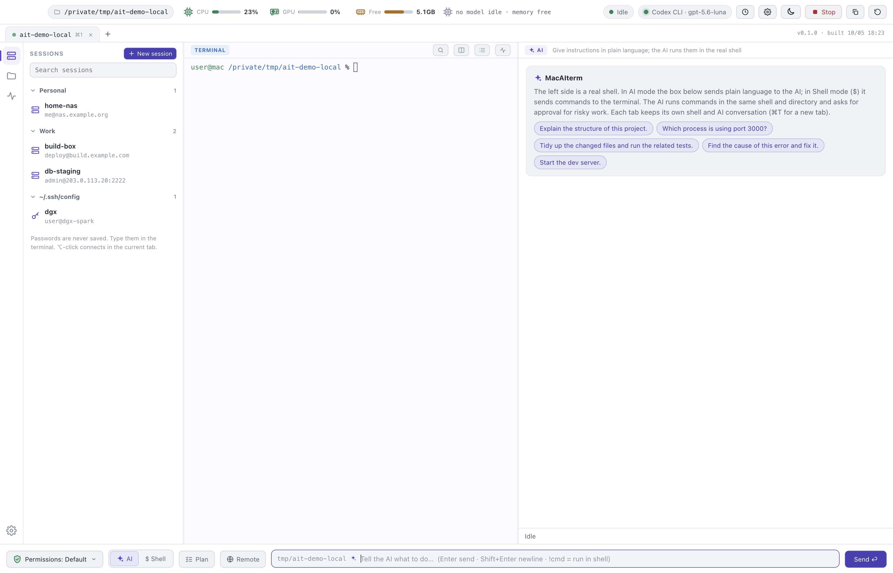
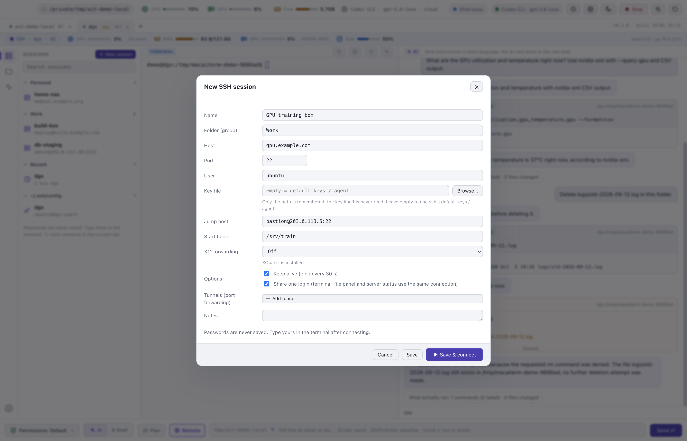

Plan mode
Review the plan before execution
For a request that takes several steps, the agent first proposes a plan of three to six steps.
You can approve it, request changes or cancel.
MacAIterm combines a real shell with an AI agent that works in the same session.
It adds resource monitoring, file trees and saved sessions for work on remote servers over SSH.
MacAIterm does not replace your terminal.
The agent, the approval flow and the server tools are added around a real zsh session that you can still type into.
The agent runs commands in the same session and directory you are working in.
It reads, edits and creates files, and shows every change as a diff that can be undone.
When a test fails, it continues until the test passes or it stops and explains why.
Risky commands wait for your approval.
The app provides four permission modes, secret masking, a network-block mode and an audit log of every command the agent ran or attempted.
Use a local model through Ollama, an OpenAI-compatible server or the OpenAI API, or Codex CLI with a ChatGPT login.
Local models keep the conversation on your Mac.
The other options send it to the provider you select.
After you connect with SSH, the agent can run commands, edit files and search on the server.
Anything that changes the server requires an approval that names it.
Read-only checks run immediately.
A strip under the tabs shows the server's CPU, memory, GPU (including NVIDIA) and disk.
Your Mac's CPU, GPU and memory remain in the top bar.
Only a read-only script runs on the server.
Saved sessions, ~/.ssh/config import, jump hosts, X11 and port forwarding.
File trees for the server and your Mac open side by side, and dragging copies files with SHA-256 verification.
Passwords are never stored.
Every image is a capture of the running application.
The agent in these screens is Codex CLI, and the SSH screens show a real NVIDIA DGX Spark.
For a request that takes several steps, the agent first proposes a plan of three to six steps.
You can approve it, request changes or cancel.

Deleting, installing, pushing and any other change to the system requires approval, shown with the exact command and the reason.
Allow it once, for the session or for the project, or deny it and give the agent feedback.

An Ollama model runs entirely on your machine, which suits short lookups like this one.
Multi-step work needs a Mac with more memory than a 16 GB laptop provides.

A strip under the tabs shows the server's CPU, memory, GPU and disk, while the top bar keeps your Mac's figures.
File trees for both machines open on the left.


Copy files and whole folders in either direction.
Each file is verified with SHA-256 before it replaces anything, and a cancelled transfer never leaves a partially written file.

The status panel graphs recent samples and compares the server with your Mac.
It reads /proc, df and nvidia-smi, and installs or writes nothing.
Commands run in the terminal you are watching, in the server's shell.
The result card names the server and its folder, so the location of every command is clear.

Read-only checks run immediately.
Anything that could change the server asks first, and the approval shows the server's name.
“Always allow” rules apply only to that server and only for the session.


Saved sessions in folders, hosts from ~/.ssh/config and recent logins.
Double-click to connect.
Passwords stay in the terminal, where you type them.

Key file, jump host, start folder, X11, port forwarding and keep-alive.
Every field is validated, so a pasted value cannot become an additional ssh option.
No model is bundled.
Choose where the agent runs, and change it at any time from the chip in the top bar.
| Option | Requirements | Notes |
|---|---|---|
| Local (Ollama) | Ollama and a model, for example ollama pull qwen3:8b | The conversation stays on your Mac. An 8B model fits a 16 GB Mac but is slow for multi-step work. |
| OpenAI API / compatible | An OPENAI_API_KEY, or the address of a server such as LM Studio, llama.cpp or vLLM | The context is sent to that server. Keys are read from the environment or stored in the Keychain and are never displayed. |
| Codex CLI | codex signed in with ChatGPT | The context is sent to OpenAI through your Codex login. The screenshots above were captured this way. |
Download the .dmg, drag MacAIterm to Applications and, on the first launch, right-click and choose Open.
The app is not signed yet.
Pull a model with Ollama, add an API key or sign in to Codex.
Then select it in the model chip.
For example, “Which process is using port 3000?” or “This test fails; fix it.”
For a server, connect with ssh as usual.
Free, MIT licensed, no account.
Version 0.1.0 for Macs with Apple silicon.